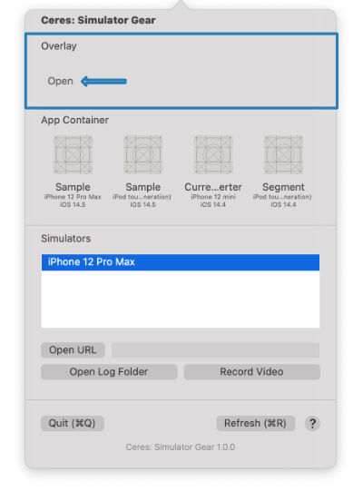
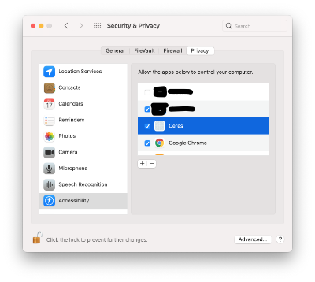

Overlay #
Display an overlay image directly on top of the simulator and compare the design with the actual developed screen.
-
Click the “Open” button as indicate in the image below

-
For the first time, you may need to grant accesibility from the privacy settings 
Otherwise, skip to step 4
-
Restart the application
-
Browse to the design image to compare
-
Click “snap” to automatically align the overlay window on top of the previous active simulator window. You can adjust the opacity by using the slide bar on the image window.
Home